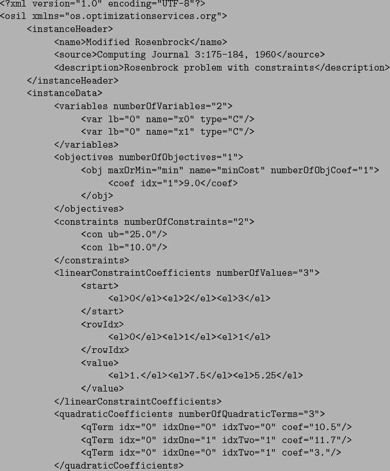
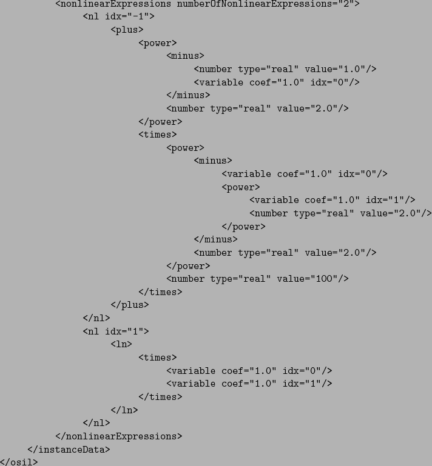

Next:
OSiL representation for problem
Up:
Appendix
Previous:
Building a Model in
Contents
OSiL representation for problem given in (
1
)-(
4
) (p.
)


Kipp Martin 2008-01-16


![[*]](crossref.png) )
)